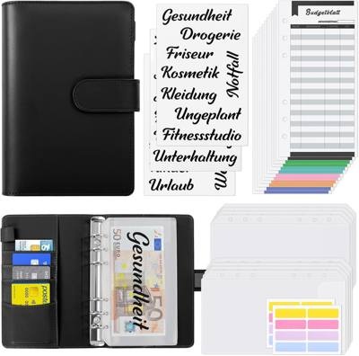

Contanti divisi per categoria a inizio mese: quando la busta è vuota, hai finito. Semplice e infallibile.
Il cash stuffing è il budget per chi non riesce coi numeri su schermo: prelevi, dividi in buste per categoria, spendi finché c'è. Quando la busta è vuota, hai finito davvero.
Spesa, trasporti, svago, extra: quattro-sei buste bastano. Bollette e affitto restano sul conto, il metodo serve per le spese variabili dove sfori sempre.
Parti dagli ultimi tre mesi di estratti conto e fai la media per categoria, arrotondata per difetto. Meglio una busta stretta che si può allargare che una larga da tagliare.
Niente prestiti tra buste il primo mese. Se la busta svago finisce il 20, il 20 smetti: è così che il metodo ti insegna dove vanno i soldi.
Segna ogni spesa sul foglio della busta o con una app note. Vedere i numeri scendere giorno per giorno è metà dell'efficacia.
